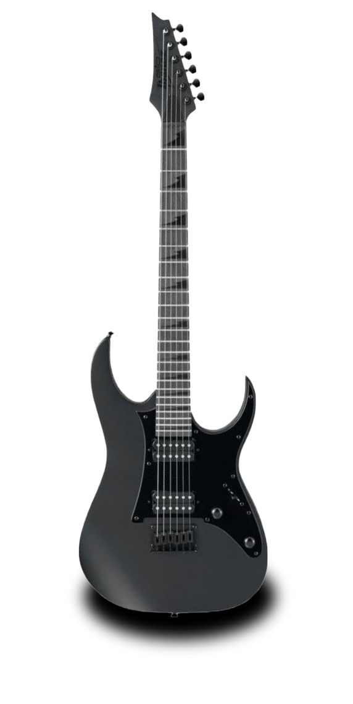
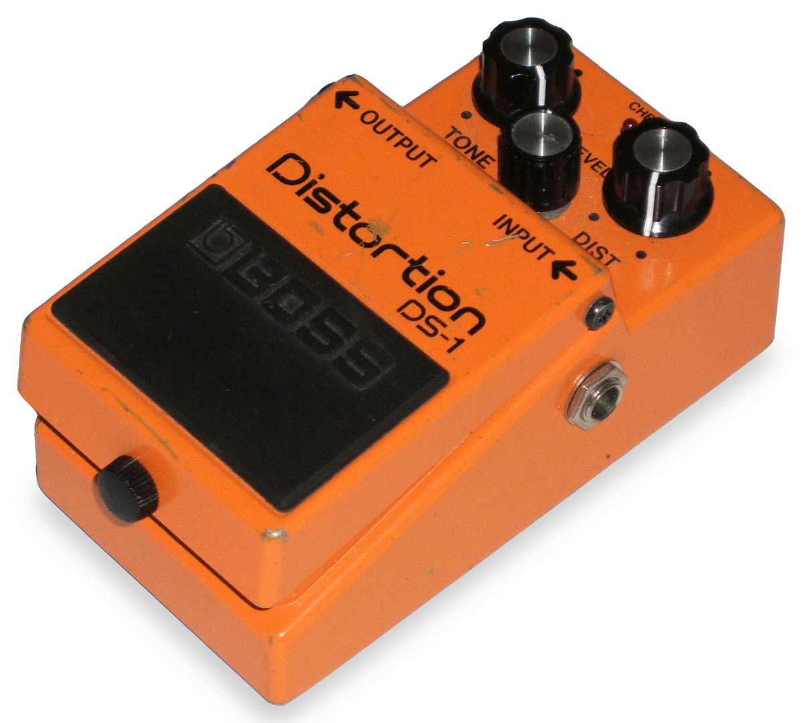

GUITARMILO
Pedales
Guitarras
Bajos
NUEVO

Guitarra electrica ibanez grg121 dxbf gio
Tipo de cuello: GRG
Mástil de arce
Pastilla de puente Infinity R (H) Pasiva / Cerámica
Puente: puente F106
Salida: jack 1/4 "
NUEVO

DISTORSIÓN
Compatible con guitarra eléctrica.
Incluye 1 efecto.
Trae conector de entrada jack 6.3 mm.
Trae conector de salida jack 6.3 mm.
Sonidos de alta calidad.
GUITARMILO
SOBRE GUITARRAS , BAJOS Y PEDALES